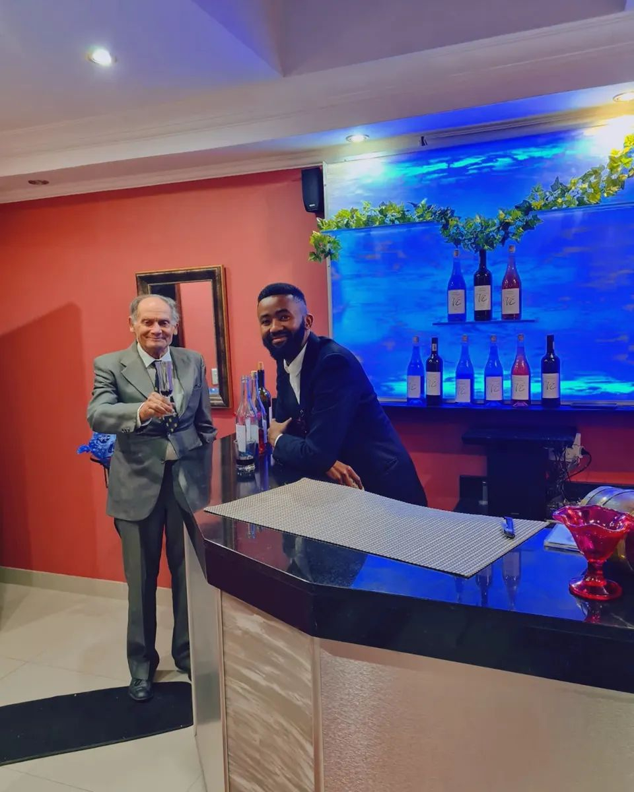

Our Story

PHANTOM VI was founded in 2015 by Eleanor Belarie in the Western Cape. With grit, creativity, and passion, he built the business from humble beginnings, eventually expanding operations to Colesberg.
Today, Phantom VI is a respected name in custom alcohol bottling, label printing, and private-brand support, known for transforming dreams into real, tangible products. From ashes to glory, Eleanor’s journey is a true tale of resilience and excellence in the industry.
What We Do
Phantom VI helps entrepreneurs, event brands, and established businesses launch and scale premium wine, gin, and vodka lines without the usual headaches.
- Custom Bottling: Wine, gin & vodka bottling with consistent quality and clean presentation.
- Private Label Support: Bottle label design (front & back), print-ready setup, and branding guidance.
- Compliance Add-ons: Barcode registration support and packaging readiness for retail.
- Nationwide Delivery: Reliable courier delivery with optional bottle insurance.
Where To Find Us
Address: 41c Mynhardt Street, Strand, Cape Town
We coordinate production and sourcing through our partners, making it possible to serve customers across South Africa — fast.
Our Team
Eleanor Belarie
Founder & Branding Lead
Johan Smit
Production Manager
Lebo Ndlovu
Operations Coordinator
Francina Baba
Design & Label Expert
Licensing & Legal in South Africa
Licensing in SA can be complex — so we keep it practical. Phantom VI supports you with guidance, packaging readiness, and the right direction for compliance.
Important: We can assist with guidance and certain promotional/event supply routes, but ongoing retail or commercial selling must comply with South African liquor laws and the rules in your province.
Common licensing paths
- Events & Promotions: Limited sales/serving under specific permissions and event rules (varies by province).
- Retail / Online Sales: Usually requires the correct liquor license for the business and premises.
- Manufacturing / Distribution: Additional approvals may apply depending on how you operate and where you store/dispatch stock.
- Main Bodies: Provincial liquor boards
- Costs: R5,000 – R50,000+ depending on type and province
- Process: Application → Inspections → Hearing
- Timeline: 6 to 24 months
What we help you prepare
- Label readiness: clean front & back layouts and print-ready files.
- Barcode support: barcode registration add-on for retail preparedness.
- Order documentation: clear product breakdowns for your records and delivery.
Responsible trading: Alcohol is not for sale to persons under 18. Always enjoy responsibly.
When you’re ready for your own license, we’ll guide you every step of the way.